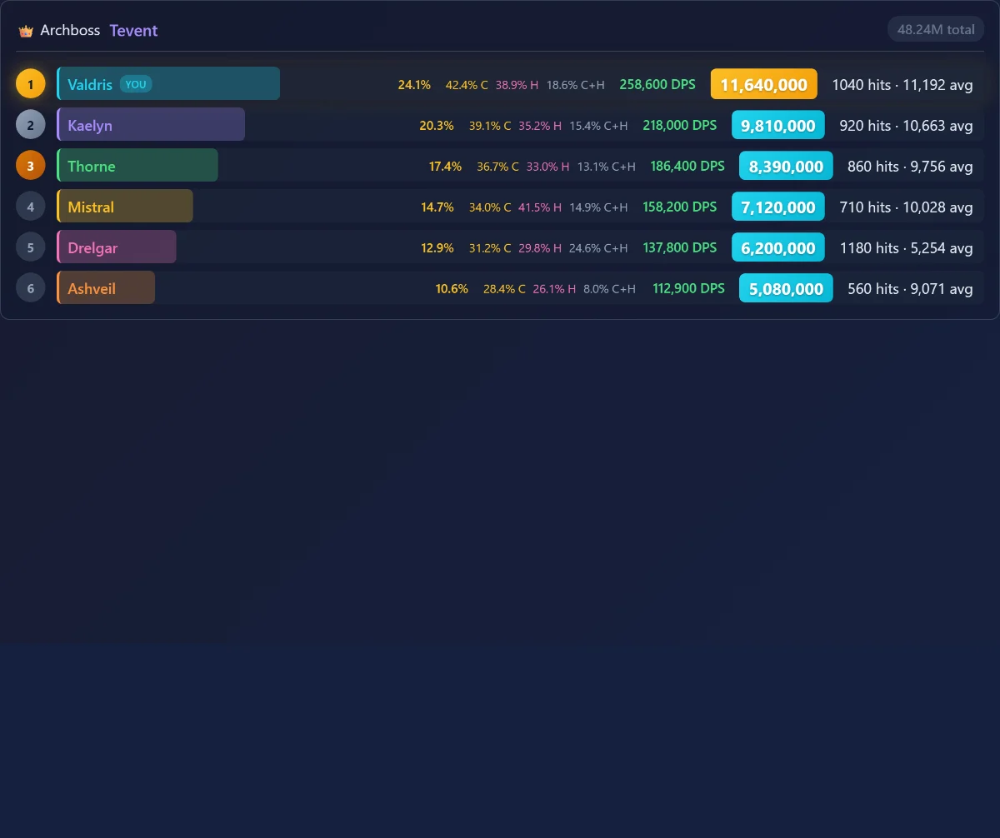
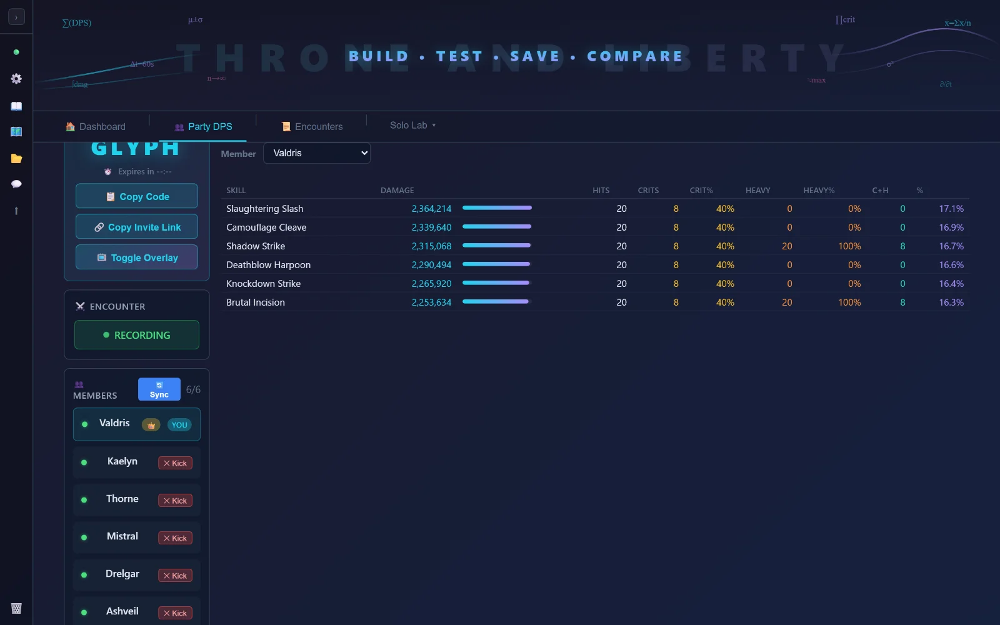
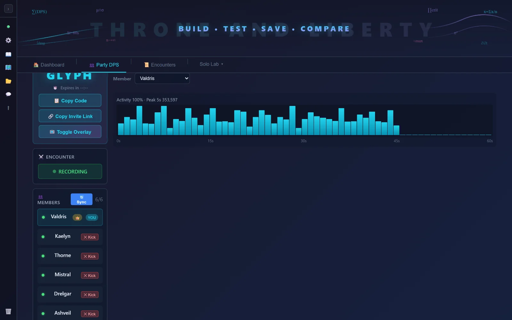
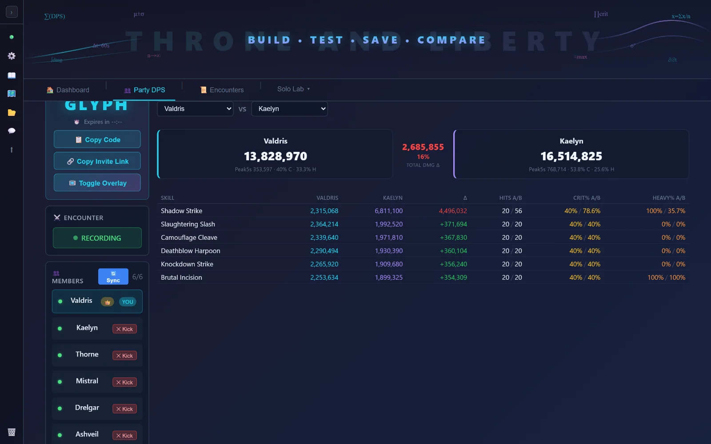
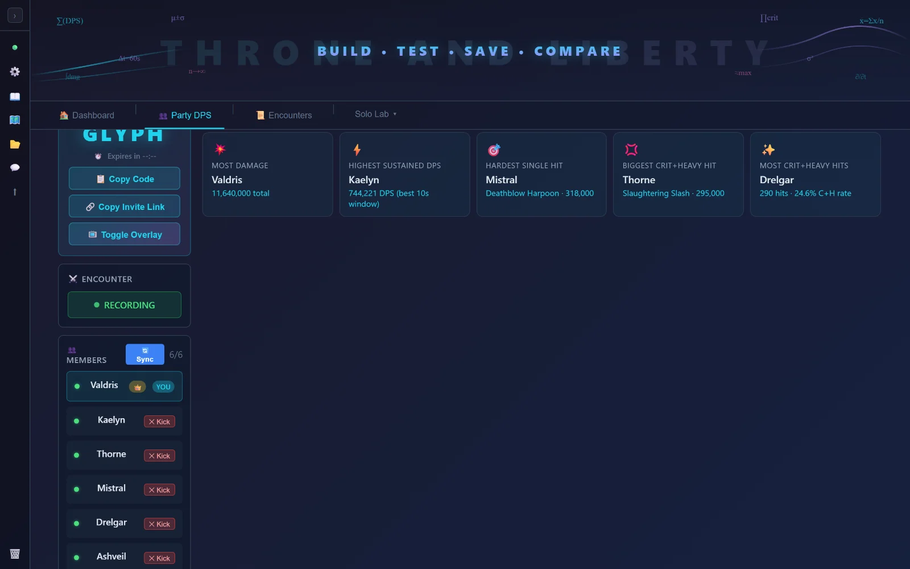

A live, shared boss scoreboard for your entire group — everyone runs the app, joins one code, and every kill produces one ranked board. Plus a deep solo build-testing lab. It reads the combat logs the game writes; it never touches the game.
Windows 10/11 · no account · ~ instant setup · 100% free
Why it's different
Most Throne and Liberty meters only show your numbers. This one puts the whole group on one board, with the depth of a solo analyzer for every member.
Every boss kill = a single ranked scoreboard with each member's damage, contribution %, DPS, hits, and crit / heavy rates.
Share one invite link or a 4-letter code. No accounts, no logins, no config — your teammate is on the board in seconds.
Click any teammate for their full per-skill breakdown and rotation timeline — the same depth as your own view.
Pick any two members and compare their skills side-by-side: damage, hits, crit, heavy — with the deltas called out.
A transparent, click-through overlay floats the live board over the game. Always-on-top, draggable, resizable.
Auto-awarded superlatives — most damage, hardest hit, biggest crit+heavy, top sustained DPS — for the whole run.
Tune your own rotation: per-skill tables, rotation charts, and side-by-side build comparison for testing changes.
No ads, no tracking, no telemetry. MIT-licensed source on GitHub. It reads logs the game writes — never the game process.
A look inside
Real screens from the app.
No more swapping screenshots after a run. Each boss produces one merged board with everyone on it.

Full per-skill breakdown for any member — the damage, hits, and crit/heavy split for every skill they cast.

A per-second damage timeline shows the ramp, the burst windows, and where the downtime was.

Put any two members side-by-side and see exactly where the gap is, skill by skill.

The run's superlatives, awarded automatically — and they spread across the group, rewarding different play styles.

Get going
Each party member runs the app and joins the same code.
Grab the installer or portable build below and launch it. The app is its own window — no browser tab.
In Throne & Liberty: add Combat Meter to the Ring Menu (Settings → Shortcuts) and activate it.
Open the Party DPS tab, pick your name, and enter the shared code (or open an invite link).
T&L writes the log when a fight ends — so the ranked board lands the moment the boss drops.
Free, open-source, Windows 10/11. Pick the installer for set-and-forget, or the portable zip to run from anywhere.
First launch shows a SmartScreen “unknown publisher” notice (the build isn't code-signed yet) — click More info → Run anyway. Or browse all releases.
Questions
No. The app only reads the combat-log text files that Throne & Liberty itself writes to your disk when you enable Combat Logging. It never reads or writes the game's memory or process. Use of any third-party tool is at your own discretion under the game's terms.
Yes — completely free and open-source under the MIT license. No ads, no paid tiers, no account.
Yes. Damage is read from each player's own combat log, so everyone in the party runs the app and joins the same code. Only members running the app appear on the board.
The build isn't code-signed yet, so Windows shows a caution on first launch. Click More info → Run anyway. The source is public if you'd like to inspect or build it yourself. Code signing is on the roadmap.
Everything is computed on your machine. The shared party scoreboard is the only data that leaves your device, and it's capped and auto-evicted, never sold. Full details in the privacy policy.
Windows 10/11 only for now — that's where Throne & Liberty runs.
Credits & lineage
This project exists because of SirPHz and the original ツCKヤ DPS Meter (CKdpsApp) — the first real combat-analytics tool for Throne and Liberty, and the source of the party-DPS idea this whole app is built around. STOOP is an independent successor: the party stack was rebuilt from scratch on owned infrastructure, so none of the original's code is used here — but the vision is entirely SirPHz's. If you haven't seen it, go give the original a look.